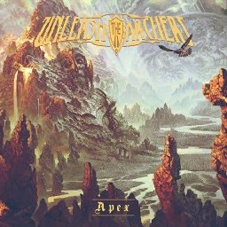

This is your layout as it will be sent out. Change layout size and other visuals below:
Click to move/resize any element in the layout panel below:

Unleash the Archers
VISUAL SETTINGS:
Element settings: Re-order for layering, change header text, adjust font size, and toggle off the element:
Marquee Scroll Roll: add a banner element below, then assign other elements to it via their own "Marquee Roll" setting above to merge their text into one scrolling banner:
Add your own custom text below
Import/Export Your Settings Using a .json or With Copy/Paste: